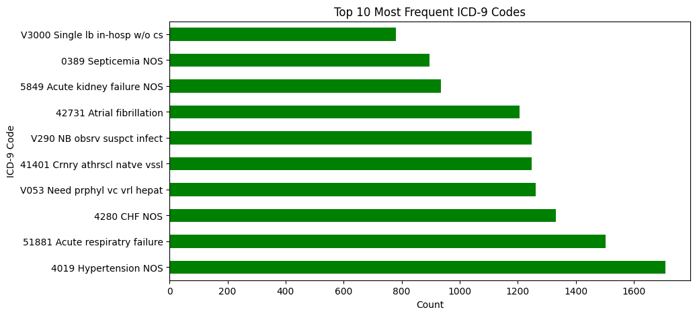
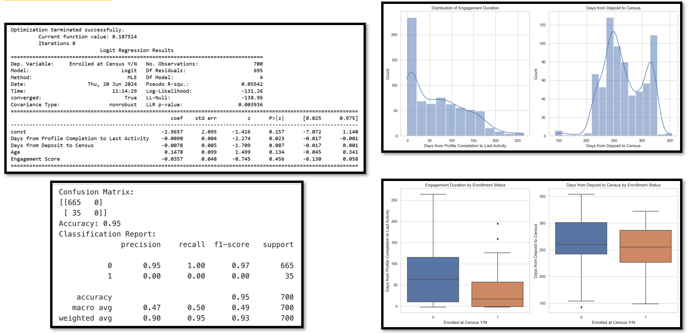
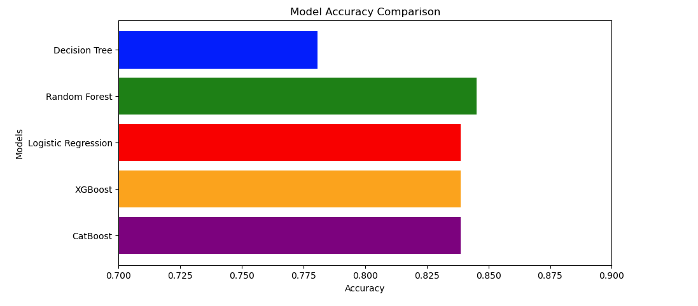

Peer Tutor, Northeastern University
2024 to 2025- Supported students in Python, Structured Query Language, SQL, Power BI, and data analysis workflows
- Helped with data cleaning, regression, dashboard design, and project-based problem solving
I turn data into clear, useful insights for better decisions.
I’m a data analyst with a strong background in information technology, IT. I use SQL, Python, Power BI, and Tableau to turn raw data into reporting, dashboards, and decision support tools that teams can actually use.
My experience spans healthcare, finance, consumer packaged goods, CPG, and education. I focus on practical analysis, clear communication, and building tools that help people track performance, spot issues early, and make better decisions.

Analyzed Nielsen sales data to estimate price sensitivity, promotion effects, and retailer-level pricing patterns in the premium juice category.
Built regression-based analysis and dashboard views to support pricing decisions and compare promotion scenarios across products and retailers.
Built regression models on Nielsen sales data to examine pricing thresholds, promotion effects, and retailer-level patterns in the premium juice category.

Fine-tuned ClinicalBERT on Intensive Care Unit, ICU, notes to predict pneumonia risk and compared performance with structured-data approaches.

Developed a classification model to identify students at risk of disengagement and support early intervention planning.

Evaluated five machine learning models on MIMIC-II data to detect infective endocarditis using 5-fold cross-validation and standard performance metrics, with feature importance analysis to support model interpretation.

Applied clustering methods to customer data to identify meaningful segments and support targeted marketing analysis.
Northeastern University, United States
Completed March 2025
Coventry University, United Kingdom
Completed September 2014
University of Ghana, Ghana
Completed May 2007
Email: andrewamartei@gmail.com
LinkedIn: linkedin.com/in/andrewamartei